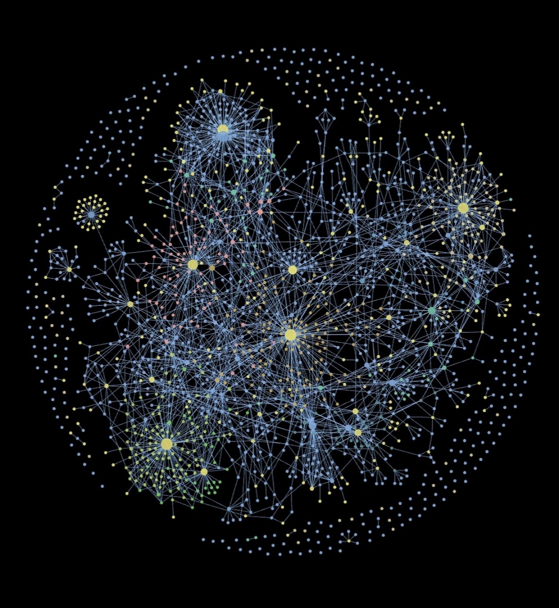
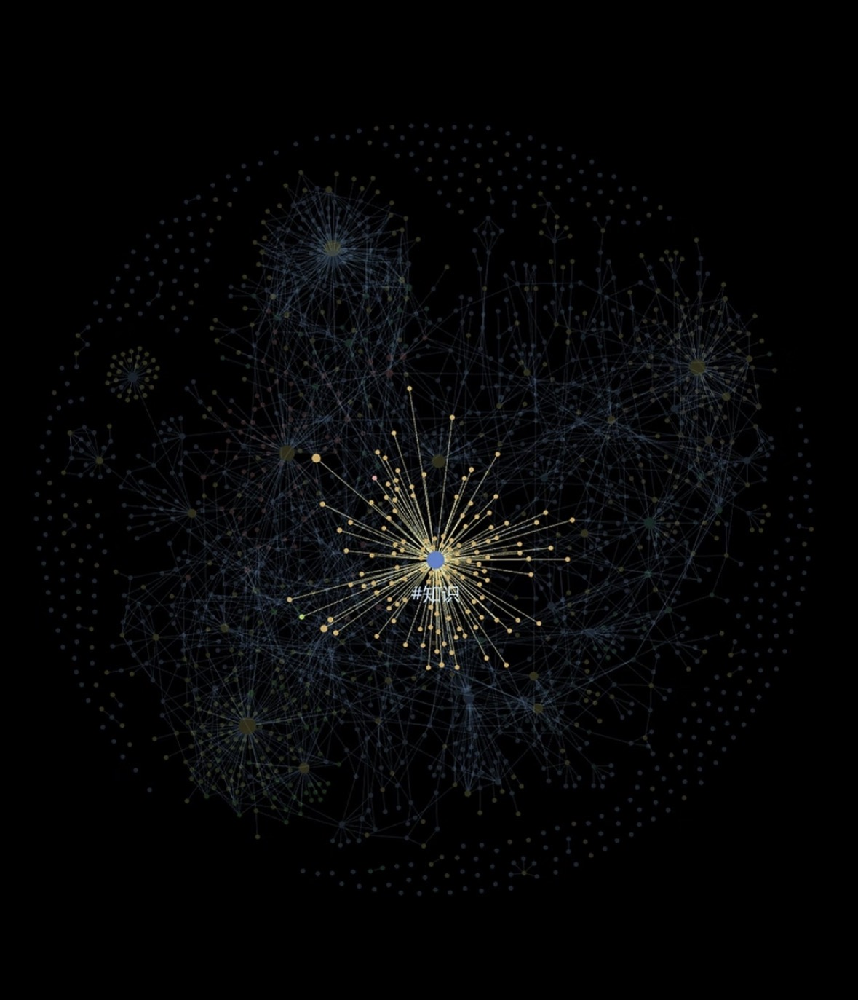

全栈开发 · AI应用 · 云计算 · 数据可视化
ZHUFENG WANG · wang-zhufeng
擅长从云端基础设施到用户界面的全链路交付，具备 RAG 全流程工程经验与扎实的前后端基础。
深度使用 AI 工具辅助开发，具备强 AI 原生工作习惯。
来自河南许昌，悉尼科技大学（QS 88）软件系统工程硕士 2026 届，当前成绩 High Distinction（均分 85+）。全英文授课项目，雅思 6.5，可无障碍阅读英文技术文档，具备跨团队英文协作经验。
本科就读于兰州理工大学软件工程专业，GPA 排名 11/151，持有国家发明专利一项（CN201721739406）。
硕士期间在 10 个月内同步推进 6 门课程与 5 个大项目（毕业设计贯穿全年），涵盖 AI 工程、云计算、全栈开发、数据可视化四个方向，具备较强的多线并行交付能力。深度使用 Obsidian + Claude 搭建 AI 辅助工作流，是整个多线并行得以落地的关键。求职意向：AI 应用开发 / 数据可视化工程师 / 全栈开发，可调动。
深度使用 Obsidian Vault「Everest」构建个人知识库，以双向链接和 Graph View 脑图组织学习笔记、项目文档、技术积累与职业规划。与 Claude 深度结合，将 AI 输出直接归档至知识节点，形成「捕获 → Claude提炼 → Obsidian归档 → 复用」的完整闭环。

